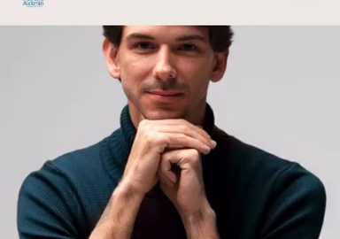

Encontre seu propósito libertando-se da ansiedade e da autocrítica
Uma jornada acolhedora de autoconhecimento que integra saúde física, mental, emocional e espiritual, transformando conflitos internos em clareza, leveza e reconexão com quem você realmente é.
Você se reconhece em alguma dessas situações?
- Está frequentemente cansado e ansioso, preso num ciclo constante de cobranças internas.
- Tem dificuldade em definir limites e acaba se sobrecarregando com expectativas externas.
- Lá no fundo, sente que falta algo essencial, e essa sensação de vazio não vai embora.
A verdade é que você não precisa de mais um objetivo. Você precisa se reconectar com quem realmente é.
Aqui começa seu reencontro com a própria essência. Tudo o que você busca já está dentro de você.
Um caminho acolhedor com apoio profissional para guiar você de volta a si mesmo
Por meio de uma terapia humanizada, ética e profunda, você vai encontrar:
Autoconhecimento
Reconheça e transforme os padrões emocionais e mentais que hoje limitam sua vida, seus relacionamentos e sua felicidade.
Equilíbrio emocional
Desenvolva ferramentas práticas para lidar com ansiedade, estresse e autocrítica, recuperando leveza e tranquilidade emocional.
Clareza de propósito
Descubra o que realmente importa para você, alinhando suas escolhas com sua essência, potencial e valores.
Relacionamentos saudáveis
Aprenda a estabelecer limites claros e construa relações equilibradas, autênticas e mais significativas.
Você não precisa caminhar sozinho.
Toda jornada de reencontro pede um guia que conheça profundamente os desafios do caminho e saiba apoiá-lo com acolhimento, leveza e respeito.
Conheça seu terapeuta Marcelo Alckmin
Marcelo é bacharel em Psicologia — CRP:04/63250, com pós-graduação em Psicologia Transpessoal pela Unipaz e especialização em Clínica Transpessoal pela FAVI. Sua formação é complementada por uma sólida base holística em cultura de paz (Unipaz) e pela certificação como professor de yoga pela Ananda School of Yoga (EUA).
Mais do que títulos
Marcelo é reconhecido pelo acolhimento genuíno, pela escuta empática e pelo profundo respeito à sua jornada única. Utilizando técnicas como análise de sonhos, textos reflexivos, histórias pessoais, respiração consciente, imaginação ativa e momentos profundos de troca, ele guia você para organizar todas as áreas da sua vida, fortalecer sua inteligência emocional e ampliar sua conexão com a vida.
Abordagem
Sua abordagem transpessoal também leva você a explorar estados ampliados de consciência, despertando sua intuição e proporcionando uma conexão profunda com um propósito maior. Tudo isso em um espaço seguro, acolhedor e dedicado à sua transformação integral.
Como funciona essa jornada?
Reconheça seus padrões internos
Você já percebeu que alguns desafios sempre voltam? Com uma abordagem profundamente humana, vamos usar ferramentas como análise de sonhos, textos reflexivos e histórias pessoais, para ajudar você a entender melhor suas emoções, pensamentos e comportamentos.
Liberte-se de ciclos repetitivos
Você terá acesso a práticas que vão além do racional, como imaginação ativa, respiração consciente e momentos de troca profunda, escuta ativa, com apoio acolhedor para desbloquear novos caminhos, fortalecer sua inteligência emocional e se reconectar com sua intuição.
Construa seu próprio caminho
Com o suporte acolhedor e seguro do seu guia, você integrará essas novas percepções ao seu dia a dia, desenvolvendo habilidades que vão te ajudar a reorganizar todas as áreas da sua vida com muito mais clareza, significado e uma profunda conexão consigo mesmo.
Benefícios da abordagem
-
Equilíbrio emocional
Redução significativa de ansiedade, estresse e autocrítica, promovendo maior tranquilidade no dia a dia.
-
Clareza mental
Pensamentos mais organizados e decisões alinhadas com seus valores e propósito de vida.
-
Relacionamentos saudáveis
Construção de vínculos mais autênticos, com limites claros e maior confiança em si mesmo.
-
Conexão com um propósito maior
Trazendo mais significado para sua existência, com integração de aspectos físicos, emocionais, mentais e espirituais, proporcionando uma transformação duradoura.
O que dizem as pessoas que já foram guiadas pelo Marcelo
"Após apenas algumas sessões com Marcelo, minha consciência se expandiu sobre um conflito profissional que me afligia. Hoje me sinto realizada e segura no meu caminho. Ele conduz o processo com leveza e assertividade. Recomendo sem hesitar."
"A cada encontro com Marcelo, vejo mudanças reais no meu comportamento. Ele é atencioso, assertivo e tem me ajudado profundamente no meu processo de autoconhecimento. Hoje tenho mais direção e me sinto melhor comigo mesma."
"Mais de um ano de terapia com Marcelo me ajudou a transformar minha mentalidade, espiritualidade e reencontrar o propósito em uma nova profissão. Voltei a pintar, algo que tinha abandonado há anos. A cada dia, sinto que tudo vai se ajeitando."
"Cara, queria agradecer muito pelo seu acompanhamento, estou me sentindo acolhido e tendo a oportunidade de trabalhar minha saúde mental, emocional e espiritual de forma muito integrativa e prática — estou me tornando mais consciente de questões profundas da minha vida e já vejo resultados transformadores no meu dia a dia. Muito Obrigado"
Comece sua jornada agora
Transformação integral
Reconexão profunda com sua essência
Equilíbrio emocional
Ferramentas práticas para seu bem-estar
Clareza de propósito
Alinhamento com seus valores essenciais
Dê o primeiro passo para se reconectar com sua essência, conquistando mais clareza, equilíbrio emocional e significado na sua vida.
Principais Dúvidas sobre Psicologia Transpessoal
A psicoterapia transpessoal é uma abordagem psicológica que busca compreender a pessoa de maneira integral, considerando aspectos emocionais, mentais, comportamentais e também questões relacionadas a significado, propósito e espiritualidade.
No meu trabalho, a abordagem transpessoal é utilizada num processo de autoconhecimento e compreensão dos padrões internos que podem estar relacionados à ansiedade, autocrítica, conflitos pessoais, relacionamentos e sensação de falta de propósito.
Sim. O objetivo não é simplesmente eliminar uma sensação isolada, mas compreender os padrões emocionais e mentais relacionados à sua experiência. Na terapia, exploramos a ansiedade, estresse e sobrecarga emocional por meio de escuta individualizada e recursos como reflexão, respiração consciente e análise de sonhos.
Você não precisa procurar acompanhamento somente em situações graves. Muitos buscam terapia ao perceberem padrões emocionais, pensamentos ou conflitos interferindo na qualidade de vida.
Sinais como ansiedade frequente, excesso de autocrítica, dificuldade em estabelecer limites, falta de clareza sobre decisões e desconexão com o propósito são indicativos de que a terapia pode ajudar muito.
A Psicologia Transpessoal busca ampliar a compreensão do indivíduo para além dos aspectos puramente emocionais e comportamentais, incluindo questões relacionadas a consciência, significado, propósito e espiritualidade.
Eu combino essa perspectiva com escuta terapêutica e ferramentas como imaginação ativa e respiração, buscando ajudar a pessoa a compreender seus padrões internos de forma ampla.
Sim. A busca por propósito é central no meu posicionamento. A intenção não é lhe dar uma resposta pronta, mas criar um processo de autoconhecimento onde você possa compreender melhor seus valores, desejos e conflitos.
Ao longo da jornada terapêutica, você ganhará clareza sobre o que considera importante e fará escolhas mais alinhadas com a vida que deseja viver.
"Dê o primeiro passo para sua auto transformação"
Escolha o canal de comunicação mais adequado para você e inicie sua jornada de transformação: